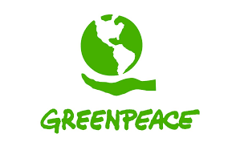

Eco Justiça
Eco Justiça

RACISMO AMBIENTAL
SAIBA MAIS
Racismo Ambiental são as injustiças ambientais que afetam, desproporcionalmente, comunidades marginalizadas, principalmente pessoas negras, indígenas e de baixa renda. O termo foi popularizado por Robert D. Bullard, considerado o "pai da justiça ambiental", que destacou como práticas de planejamento urbano, políticas públicas e decisões empresariais contribuem para essa disparidade. Essas populações citadas anteriormente, enfrentam uma maior exposição a riscos ambientais, como poluição, desastres ecológicos, acesso precário a saneamento e falta de infraestrutura básica.
NOTÍCIA
ROMPIMENTOS DAS BARRAGENS EM MARIANA E BRUMADINHO
Os rompimentos das barragens em Mariana (2015) e Brumadinho (2019), em Minas Gerais, causaram tragédias ambientais e humanas de grande escala, devido à negligência das empresas Samarco e Vale. Em Mariana, a barragem do Fundão liberou rejeitos de minério que devastaram Bento Rodrigues e o rio Doce, afetando centenas de famílias. Em Brumadinho, a barragem de Córrego do Feijão matou 270 pessoas e destruiu casas, afetando gravemente a população local e o ecossistema do rio Paraopeba. Ambas as tragédias expuseram a vulnerabilidade de comunidades marginalizadas, como trabalhadores e populações ribeirinhas, que sofreram de forma desproporcional os impactos desses desastres. Esses casos exemplificam o racismo ambiental, com as populações mais afetadas recebendo pouca assistência ou compensação.
CÉSIO 137 - ACIDENTE RADIOATIVO EM GOIÂNIA
Em setembro de 1987, Goiânia foi palco de um grave acidente com o césio-137, um material radioativo altamente perigoso, que foi liberado após o manuseio inadequado de um aparelho de radioterapia abandonado. O "pozinho" azul brilhante que se espalhou contaminou diversos locais, afetando principalmente comunidades vulneráveis, como catadores de materiais recicláveis e moradores de áreas de baixo poder aquisitivo. Essas populações, sem informações adequadas ou medidas preventivas, foram expostas a sérios riscos de saúde, com sintomas como náuseas, queimaduras e doenças crônicas. O acidente exemplifica o racismo ambiental, pois as camadas mais marginalizadas da sociedade foram as mais prejudicadas e as que menos receberam apoio governamental, tanto em assistência médica quanto em compensações financeiras, muitas vezes desiguais.
COMUNIDADE QUILOMBOLA DE ALCÂNTARA - LUTA PELA SUA TERRA
A comunidade quilombola de Alcântara, no Maranhão, enfrenta um intenso conflito territorial devido à expansão do Centro de Lançamento de Alcântara (CLA), que ocupa vastas áreas de suas terras. Esse projeto militar tem causado deslocamento forçado e a perda de recursos essenciais para a subsistência e cultura local, afetando diretamente a qualidade de vida da população quilombola. A luta por reconhecimento e pela titulação de suas terras é central para a resistência da comunidade, que busca garantir seus direitos frente à exploração histórica.
ENCHENTE NO RIO GRANDE DO SUL
Em 2020, o Rio Grande do Sul enfrentou uma série de enchentes devastadoras, que atingiram diversas cidades do estado. A forte chuva e o transbordamento dos rios causaram a destruição de casas, ruas e infraestrutura, afetando principalmente as comunidades mais vulneráveis, como as de baixa renda e áreas periféricas. A falta de planejamento urbano adequado e a ocupação irregular das margens dos rios intensificaram os danos, expondo a população a graves riscos. Muitas dessas famílias perderam tudo, e a resposta do poder público foi insuficiente, agravando a situação. A tragédia das enchentes no Rio Grande do Sul reflete questões de racismo ambiental, já que as comunidades mais afetadas eram, em grande parte, as mais marginalizadas, que sofreram mais devido à falta de medidas preventivas e apoio governamental.
"Quando soubemos do rompimento, a primeira coisa que fiz foi tentar entrar em contato com meu marido. Fiquei dias sem saber nada. Eu não sabia se ele estava vivo ou morto, só sabia que ele estava lá, no meio da lama. Quando finalmente me disseram que ele não havia sobrevivido, a dor foi insuportável."
"O pó era bonito, brilhava como estrelas. A gente pegava na mão, passava no rosto, achava que era mágica. Mas logo depois começaram as queimaduras. Meu rosto ardia, eu tinha febre e me sentia muito mal. Levei meses para entender o que tinha acontecido."
"Nossa terra está sendo invadida por madeireiros, por empresas de soja e até por garimpeiros. Eles não respeitam o território quilombola, invadem, destroem e não deixam espaço para a gente viver em paz."
"A população aqui está precisando de tudo: comidas; roupas; colchões e outras coisas. Teve gente que perdeu tudo"
"Relato Noticia 5"
"Relato Noticia 6"
"Relato Noticia 7"
"Relato Noticia 8"
ONGs


A Articulação de Mulheres Negras Brasileiras (AMNB) é uma organização que reúne grupos e coletivos de mulheres negras de todo o Brasil, com o objetivo de promover a defesa dos direitos das mulheres negras e combater o racismo e o sexismo. Fundada em 2001, a AMNB busca fortalecer a representatividade política e social das mulheres negras, promovendo ações de incidência política, mobilização social e valorização cultural. A ONG atua em diversas frentes, como saúde, educação, justiça e segurança, defendendo políticas públicas que atendam as demandas específicas da população negra feminina e promovam igualdade e justiça social no Brasil.
A Fundação Neotrópica do Brasil é uma organização não governamental brasileira, criada em 1993, que atua na conservação ambiental e no desenvolvimento sustentável. Com sede em Mato Grosso do Sul, a fundação se dedica a proteger a biodiversidade dos biomas brasileiros, em especial o Pantanal e o Cerrado. Ela promove projetos de preservação de ecossistemas, educação ambiental e uso sustentável dos recursos naturais, visando equilibrar as necessidades de desenvolvimento econômico com a conservação da natureza. A fundação também realiza pesquisas científicas e colabora com comunidades locais para incentivar práticas sustentáveis que beneficiem tanto o meio ambiente quanto as populações locais.
O Greenpeace é uma organização não governamental ambientalista internacional, fundada em 1971 no Canadá, que atua na defesa do meio ambiente e no combate às mudanças climáticas. A ONG é conhecida por suas campanhas e ações diretas, muitas vezes marcadas por protestos pacíficos e intervenções públicas para chamar a atenção sobre problemas ambientais. O Greenpeace trabalha em diversas áreas, como preservação de florestas, proteção dos oceanos, combate à poluição e ao uso de energia nuclear, e promoção de fontes de energia renováveis. A organização é independente, financiada por doações individuais, e atua em mais de 50 países, incluindo o Brasil, onde realiza campanhas para a proteção da Amazônia e outros biomas.
O Instituto Terra é uma organização brasileira fundada em 1998 pelo fotógrafo Sebastião Salgado e sua esposa, Lélia Wanick Salgado, dedicada à restauração ambiental e à educação ecológica. Localizado em Aimorés, Minas Gerais, o instituto se concentra na recuperação da Mata Atlântica, especialmente por meio do reflorestamento da região do Vale do Rio Doce, onde já plantou milhões de mudas de árvores nativas. Além da recuperação de ecossistemas, o Instituto Terra oferece programas de capacitação em sustentabilidade e conservação ambiental, promovendo a conscientização e o engajamento da comunidade local na proteção e valorização do meio ambiente.
O Instituto de Pesquisas Ecológicas (IPÊ) é uma ONG brasileira fundada em 1992, que atua na conservação da biodiversidade e no desenvolvimento sustentável. Com projetos em regiões como Mata Atlântica, Amazônia, Pantanal e Cerrado, o IPÊ trabalha com pesquisa científica, recuperação de ecossistemas e educação ambiental. A ONG protege espécies ameaçadas, como o mico-leão-preto e a onça-pintada, além de desenvolver projetos sustentáveis com comunidades locais. Também oferece cursos e capacitações para formar profissionais, promovendo o equilíbrio entre proteção ambiental e necessidades humanas.
O Instituto Socioambiental (ISA) é uma organização não governamental brasileira, fundada em 1994, que trabalha na defesa dos direitos socioambientais, com foco em comunidades tradicionais, povos indígenas e na conservação dos biomas brasileiros. Atuando em regiões como a Amazônia e o Cerrado, o ISA promove projetos de proteção territorial, sustentabilidade, educação e valorização cultural, buscando equilibrar a conservação do meio ambiente com o respeito e fortalecimento das populações que vivem nesses territórios. A ONG também trabalha na formulação de políticas públicas, oferecendo pesquisas e análises para melhorar a gestão ambiental e a promoção dos direitos dos povos originários e comunidades locais no Brasil.
O Instituto Pólis é uma organização não governamental brasileira, fundada em 1987, que atua na promoção da democracia, da justiça social e da sustentabilidade urbana. Com sede em São Paulo, o instituto desenvolve pesquisas, projetos e políticas públicas voltados para a melhoria da qualidade de vida nas cidades brasileiras. Suas áreas de atuação incluem direito à cidade, habitação, mobilidade, meio ambiente, economia solidária e participação cidadã. O Instituto Pólis busca fortalecer a participação das comunidades e incentivar práticas de governança inclusiva, promovendo o desenvolvimento de cidades mais justas, sustentáveis e acessíveis para todos.
Conectas Direitos Humanos é uma organização não governamental brasileira, fundada em 2001, que promove e defende os direitos humanos no Brasil e em países do Hemisfério Sul. A ONG atua em diversas frentes, como justiça, igualdade racial, segurança pública, políticas migratórias, e direitos socioambientais. Conectas trabalha com incidência política, litígios estratégicos e monitoramento de políticas públicas, além de denunciar abusos e violações de direitos humanos em foros nacionais e internacionais. A organização busca fortalecer a democracia e a justiça social, promovendo ações que combatam a discriminação e ampliem o acesso aos direitos fundamentais para populações vulneráveis.
O Movimento Nacional de Luta pela Moradia (MNLM) é uma organização brasileira criada nos anos 1990, que luta pelo direito à moradia digna para a população de baixa renda. O movimento promove a ocupação de terrenos e imóveis urbanos ociosos, a regularização fundiária e a formulação de políticas públicas de habitação popular. Busca garantir moradia adequada para todos, pressionando governos e fomentando a reforma urbana, além de conscientizar sobre a moradia como um direito humano e fortalecer comunidades vulneráveis.
Mulheres da Floresta é uma organização que reúne mulheres das comunidades tradicionais da Amazônia, especialmente indígenas, ribeirinhas e quilombolas, com o objetivo de promover o desenvolvimento sustentável e a proteção ambiental. A ONG busca valorizar o conhecimento tradicional dessas mulheres e fortalecer sua autonomia econômica, por meio de atividades sustentáveis como o artesanato, o manejo de recursos naturais e a agricultura familiar. Mulheres da Floresta também atua na defesa dos direitos das mulheres e dos territórios amazônicos, promovendo ações de capacitação, conscientização e mobilização para que as comunidades locais possam proteger suas terras e preservar a biodiversidade da floresta.
A SOS Amazônia é uma organização não governamental brasileira, criada em 1990, dedicada à preservação da Amazônia e à defesa de seus povos e ecossistemas. A ONG atua em diversas frentes, como a conscientização sobre a importância da floresta, o combate ao desmatamento, e a promoção de políticas públicas para a proteção ambiental e os direitos das populações locais, como indígenas e comunidades tradicionais. A SOS Amazônia também realiza atividades de mobilização social e advocacy, buscando sensibilizar a sociedade e pressionar o governo para a implementação de ações mais eficazes no enfrentamento das ameaças ambientais e sociais que afetam a região amazônica.
ATIVISTAS
Joênia Wapichana
A primeira mulher indígena eleita deputada federal no Brasil, defendendo os direitos dos povos indígenas e a preservação de seus territórios. Ela luta contra o racismo ambiental e pela justiça social.
Amanda Costa
Ativista climática e fundadora do Perifa Sustentável, trabalha pela inclusão de jovens das periferias em debates sobre meio ambiente e justiça climática.
Jahzara Ona
Jovem ativista brasileira que combate o racismo ambiental, promovendo a educação ambiental em comunidades periféricas.
Aderbal Ashogun
Escritor e ativista que defende a valorização da cultura afro-brasileira e luta contra o racismo ambiental nas comunidades negras.
Raoni Metuktire
Líder Kayapó, símbolo da resistência indígena, Raoni defende a preservação da Amazônia e dos direitosindígenas frente às ameaças de destruição ambiental.
Ailton Krenak
Líder indígena e escritor, Ailton luta contra o racismo ambiental e promove a harmonia entre os povos indígenas e o meio ambiente.
Adriana Ramos
Especialista em políticas públicas, Adriana atua na promoção da justiça social e ambiental, especialmente em relação ao racismo ambiental.
Celia Xakriabá
Líder indígena, Célia defende os direitos dos povos indígenas e combate o racismo ambiental, representando-os em espaços internacionais.
Kaká Werá
Líder indígena e ativista, Kaká Werá denuncia a exploração das terras indígenas e luta pela justiça ambiental e cultural.
IDENTIDADE
MISSÃO
Promover o conhecimento sobre racismo ambiental, evidenciando como ele afeta comunidades vulneráveis no Brasil. Nosso objetivo é informar, conscientizar e engajar a sociedade na luta por justiça ambiental, incentivando a reflexão sobre práticas sustentáveis e igualitárias. Queremos ser um canal de voz para quem sofre com essas desigualdades, contribuindo para um futuro mais justo.
VISÃO
Ser a principal referência no Brasil para informações e debates sobre racismo ambiental. Aspiramos construir uma sociedade em que a justiça ambiental seja uma realidade, com políticas públicas inclusivas e a participação ativa de cidadãos conscientes e mobilizados para mudanças estruturais.
VALORES
Equidade
Empatia
Transparência
Sustentabilidade Colaboração
EducaçãoInovação
Responsabilidade Social
Empatia
Transparência
Sustentabilidade Colaboração
EducaçãoInovação
Responsabilidade Social
QUAL A SUA NOTÍCIA?
Você tem uma história para contar sobre racismo ambiental? Queremos ouvir você! No formulário ao lado, você pode compartilhar sua experiência, seja um relato pessoal, uma observação de sua comunidade, ou algo que tenha marcado sua visão sobre o tema. Preencha as informações solicitadas:
Nome: para sabermos quem está conosco nessa causa;
E-mail: para que possamos, se necessário, entrar em contato e agradecer diretamente;
Título: uma forma de resumir sua história;
Conteúdo: aqui é onde sua voz será ouvida.
Ao compartilhar sua história, você nos ajuda a ampliar a conscientização sobre os impactos do racismo ambiental e como ele afeta as comunidades ao nosso redor. Sua perspectiva é essencial para fortalecer nossa luta por justiça ambiental e social. As histórias que coletamos também poderão inspirar ações, informar pesquisas e dar visibilidade a problemas que muitas vezes são negligenciados.
Agradecemos imensamente por sua coragem e generosidade em dividir sua experiência. Juntos, podemos construir um mundo mais justo e sustentável. Muito obrigado por fazer parte dessa iniciativa!
Nome: para sabermos quem está conosco nessa causa;
E-mail: para que possamos, se necessário, entrar em contato e agradecer diretamente;
Título: uma forma de resumir sua história;
Conteúdo: aqui é onde sua voz será ouvida.
Ao compartilhar sua história, você nos ajuda a ampliar a conscientização sobre os impactos do racismo ambiental e como ele afeta as comunidades ao nosso redor. Sua perspectiva é essencial para fortalecer nossa luta por justiça ambiental e social. As histórias que coletamos também poderão inspirar ações, informar pesquisas e dar visibilidade a problemas que muitas vezes são negligenciados.
Agradecemos imensamente por sua coragem e generosidade em dividir sua experiência. Juntos, podemos construir um mundo mais justo e sustentável. Muito obrigado por fazer parte dessa iniciativa!